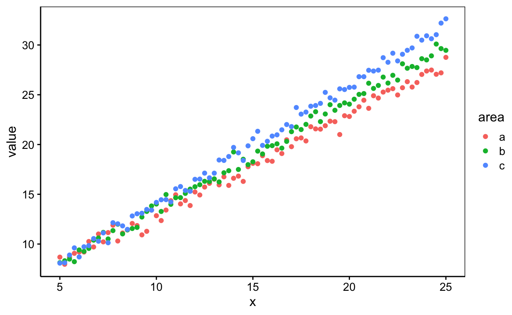
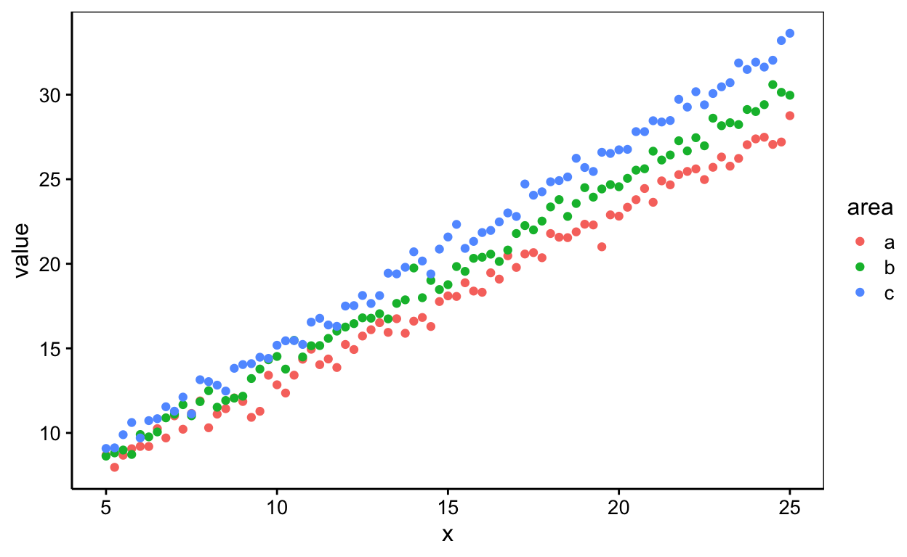
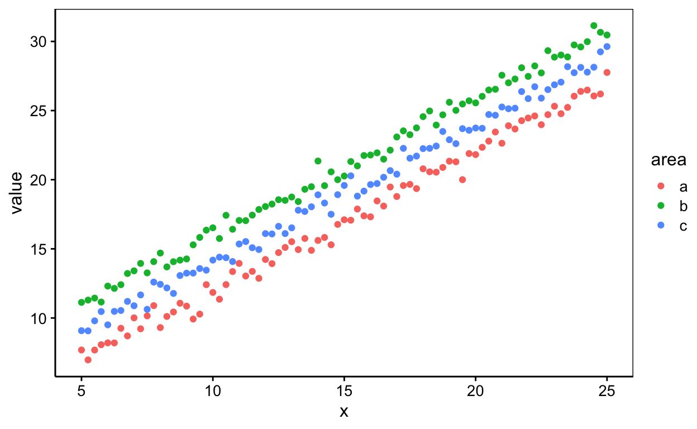
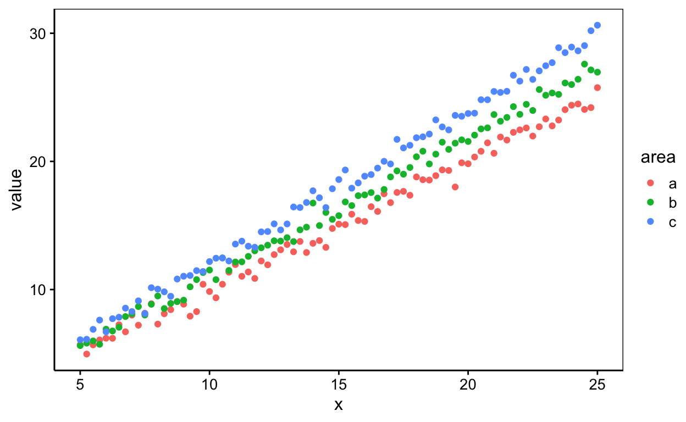

Science des données biologiques II
Réalisé par le service d'Écologie numérique, Université de Mons (Belgique)Objectifs
- Maîtriser le modèle linéaire et l’ANCOVA
Modèle linéaire 1
Réalisez la régression linéaire multiple la plus adpatée de value en fonction de x et de la variable area sur le jeu de données mais1. Vous avez à votre dispositon un nuage de points et un résumé des données pour prendre connaissance des données.
si tu souhaites faire passer ton modèle linéaire par le point 0,0, utilise la convention.

x value area
Min. : 5 Min. : 7.968 a:81
1st Qu.:10 1st Qu.:13.412 b:81
Median :15 Median :18.879 c:81
Mean :15 Mean :18.984
3rd Qu.:20 3rd Qu.:24.505
Max. :25 Max. :32.629 summary(lm. <- lm(data = ___, ___))# chunk
summary(lm. <- lm(data = DF, FORMULA))# chunk
summary(lm. <- lm(data = DF, VAR1 ~ VAR2*VAR3))
#### ATTENTION: Hint suivant = solution !####summary(lm. <- lm(data = mais1, value ~ x * area))Modèle linéaire 2
Réalisez la régression linéaire multiple la plus adpatée de value en fonction de x et de la variable area sur le jeu de données mais2. Vous avez à votre dispositon un nuage de points et un résumé des données pour prendre connaissance des données.
si tu souhaites faire passer ton modèle linéaire par le point 0,0, utilise la convention.

x value area
Min. : 5 Min. : 7.968 a:81
1st Qu.:10 1st Qu.:14.038 b:81
Median :15 Median :19.443 c:81
Mean :15 Mean :19.484
3rd Qu.:20 3rd Qu.:24.949
Max. :25 Max. :33.629 summary(lm. <- lm(data = ___, ___))# chunk
summary(lm. <- lm(data = DF, FORMULA))# chunk
summary(lm. <- lm(data = DF, VAR1 ~ VAR2*VAR3))
# ou encore
summary(lm. <- lm(data = DF, VAR1 ~ VAR2 + VAR3 + VAR2:VAR3))summary(lm. <- lm(data = mais2, value ~ x * area))
# ou
summary(lm. <- lm(data = mais2, value ~ x + area + x:area))
#### ATTENTION: Hint suivant = solution !####summary(lm. <- lm(data = mais2, value ~ x + x:area))Modèle linéaire 3
Réalisez la régression linéaire multiple la plus adpatée de value en fonction de x et de la variable area sur le jeu de données mais3. Vous avez à votre dispositon un nuage de points et un résumé des données pour prendre connaissance des données.
si tu souhaites faire passer ton modèle linéaire par le point 0,0, utilise la convention -1

x value area
Min. : 5 Min. : 6.968 a:81
1st Qu.:10 1st Qu.:14.009 b:81
Median :15 Median :18.908 c:81
Mean :15 Mean :18.984
3rd Qu.:20 3rd Qu.:23.965
Max. :25 Max. :31.144 summary(lm. <- lm(data = ___, ___))# chunk
summary(lm. <- lm(data = DF, FORMULA))# chunk
summary(lm. <- lm(data = DF, VAR1 ~ VAR2*VAR3))
# ou encore
summary(lm. <- lm(data = DF, VAR1 ~ VAR2 + VAR3 + VAR2:VAR3))summary(lm. <- lm(data = mais2, value ~ x * area))
# ou
summary(lm. <- lm(data = mais2, value ~ x + area + x:area))
#### ATTENTION: Hint suivant = solution !####summary(lm. <- lm(data = mais3, value ~ x + area))Modèle linéaire 4
Réalisez la régression linéaire multiple la plus adpatée de value en fonction de x et de la variable area sur le jeu de données mais4. Vous avez à votre dispositon un nuage de points et un résumé des données pour prendre connaissance des données.
si tu souhaites faire passer ton modèle linéaire par le point 0,0, utilise la convention -1

x value area
Min. : 5 Min. : 4.968 a:81
1st Qu.:10 1st Qu.:11.038 b:81
Median :15 Median :16.443 c:81
Mean :15 Mean :16.484
3rd Qu.:20 3rd Qu.:21.949
Max. :25 Max. :30.629 summary(lm. <- lm(data = ___, ___))# chunk
summary(lm. <- lm(data = DF, FORMULA))# chunk
summary(lm. <- lm(data = DF, VAR1 ~ VAR2*VAR3))
# ou encore
summary(lm. <- lm(data = DF, VAR1 ~ VAR2 + VAR3 + VAR2:VAR3))summary(lm. <- lm(data = mais2, value ~ x * area))
# ou
summary(lm. <- lm(data = mais2, value ~ x + area + x:area))
#### ATTENTION: Hint suivant = solution !####summary(lm. <- lm(data = mais4, value ~ x + x:area - 1))Conclusion
Vous venez de terminer votre séance d’exercice.